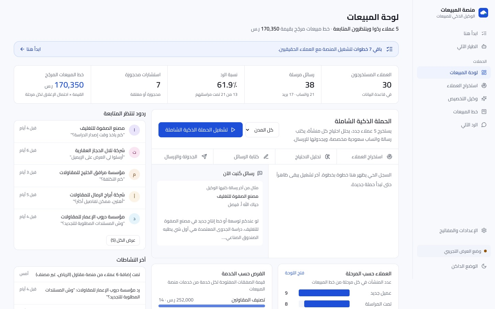
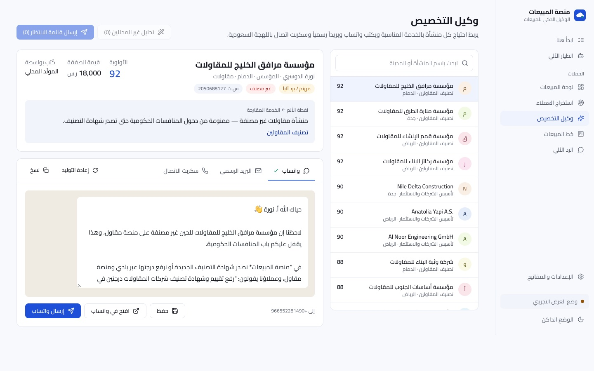
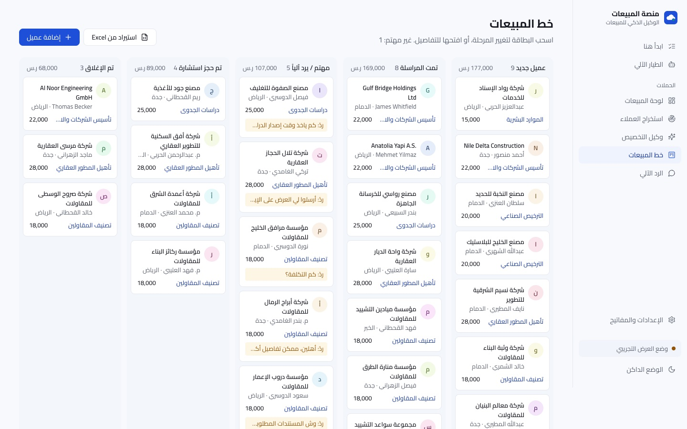
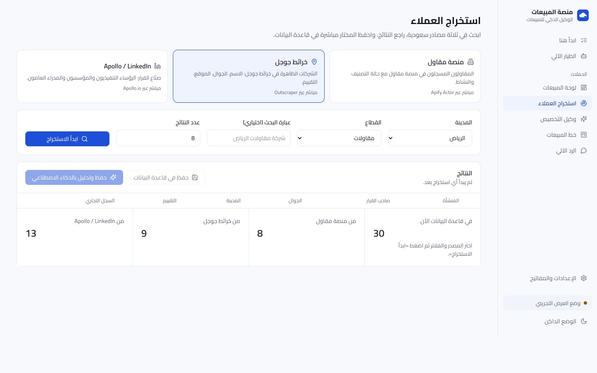
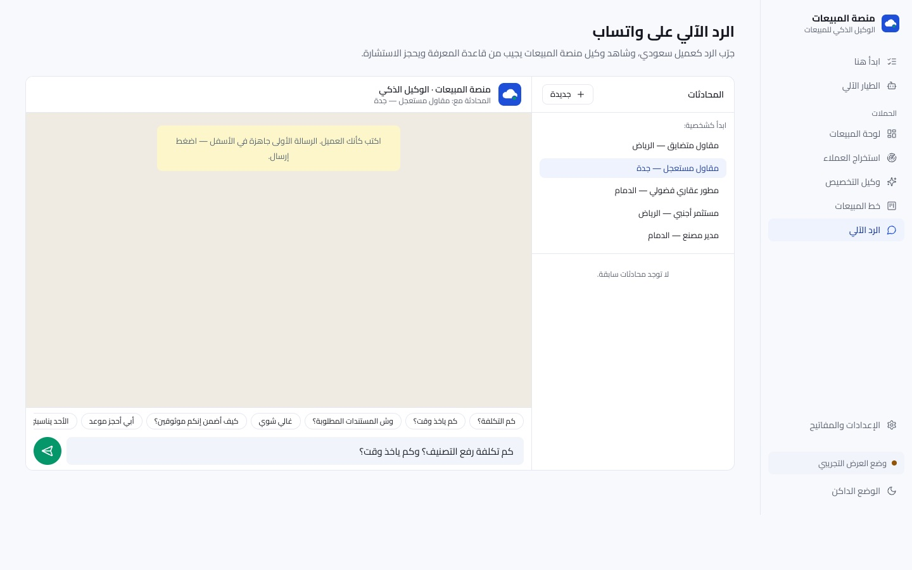

A sales platform that prospects on its own
For a business-services firm, 2026
The sales team spent their mornings on maps and contractor directories, then wrote every WhatsApp message by hand. I built them a web platform that does the searching, works out what each company probably needs, and drafts the first message in Saudi Arabic.
The part I'm proudest of is the autopilot. Every working day it finds new companies, sends messages in small batches, follows up with anyone who went quiet, reads the replies, books consultations and emails a summary when the day ends. Nobody has to open it for the work to happen.
Built with Next.js, Prisma and the Claude API, connected to WhatsApp and email.




Scroll sideways for four more screens.